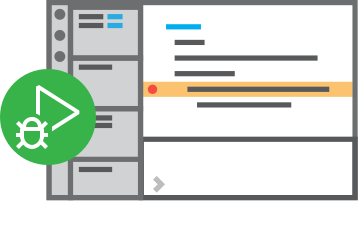

Version 1.84 is now available! Read about the new features and fixes from October.
Code editing.
Redefined.
Free. Built on open source. Runs everywhere.


IntelliSence

Built-in Git

Extensions

Jonathan Dunlap @jadbox

Meet IntelliSense.
Go beyond syntax highlighting and autocomplete with IntelliSense, which provides smart completions based on variable types, function definitions, and imported modules.
Print statement debugging is a thing of the past.
Debug code right from the editor. Launch or attach to your running apps and debug with break points, call stacks, and an interactive console.

Git commands built-in.
Working with Git and other SCM providers has never been easier. Review diffs, stage files, and make commits right from the editor. Push and pull from any hosted SCM service.
Extensible and customizable.
Want even more features? Install extensions to add new languages, themes, debuggers, and to connect to additional services. Extensions run in separate processes, ensuring they won't slow down your editor. Learn more about extensions.
Deploy with confidence and ease
With Microsoft Azure you can deploy and host your React, Angular, Vue, Node, Python (and more!) sites, store and query relational and document based data, and scale with serverless computing, all with ease, all from within VS Code.